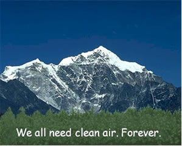

| heat |
| home page |
|  | In addition, air quality partnerships between our branch, the provincial government and these regional districts are a key element of achieving healthy air. . It focuses on the major air quality issues facing BC and the planet. It also describes the actions the Water, Air and Climate Change Branch is taking to protect the atmosphere, and how you can help. The topics under the Contents title on the left will connect you with our websites on these issues, as well as outside helpful links. |
| us with questions or comments on the web site Last modified January 19, 2001 Return to GMFL Homepage . . As we work to implement this mission we in effect, provide for cleaner air and healthier forests in all of southern Vermont. Monitoring is done in cooperation with several state and federal agencies, and educational institutions. This designation means that certain attributes of the Wilderness must be protected from deterioration. |